1. Bắt đầu
Dành cho mọi người dùng.
1.1. Đăng nhập
Mở trình duyệt (Chrome, Safari, Edge…) và vào địa chỉ https://nihan-ts.pages.dev. Không cần mật khẩu: hệ thống gửi mã đăng nhập 6 số vào email của bạn.
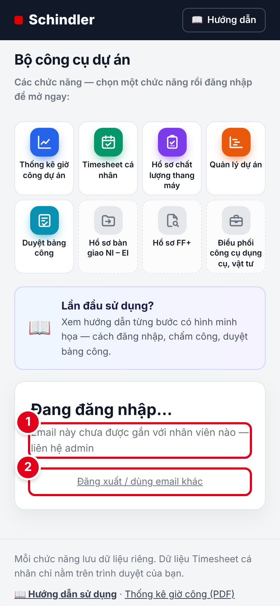
Nếu thấy thông báo như hình bên:
- “Email này chưa được gắn với nhân viên nào” — quản trị viên chưa gắn email của bạn. Gửi cho quản trị viên họ tên, mã NV và email bạn dùng để đăng nhập.
- Đăng xuất / dùng email khác — nếu bạn lỡ nhập nhầm email.
Mỗi người một email. Có thể dùng Gmail cá nhân hoặc email công ty, miễn là quản trị viên đã gắn đúng email đó.
1.2. Trang chủ
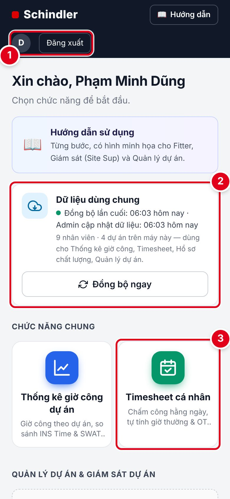
- Tài khoản — chữ cái đầu tên bạn và nút Đăng xuất. Dùng máy chung thì nhớ đăng xuất.
- Dữ liệu dùng chung — danh sách nhân viên và dự án được tải về máy để dùng cả khi mất mạng. Bấm Đồng bộ ngay nếu không thấy dự án mới.
- Các chức năng — bấm vào thẻ để mở. Mỗi vai trò thấy những chức năng khác nhau; chức năng chưa được dùng hiện ở ô khoá 🔒.
| Vai trò | Chức năng dùng được |
|---|---|
| Fitter / Nhân viên | Timesheet cá nhân, Thống kê giờ công |
| Giám sát (Site Sup) | + Duyệt bảng công, Hồ sơ chất lượng, Quản lý dự án |
| Quản lý dự án | + Duyệt bảng công (cấp 2), Quản lý dự án đầy đủ |
| Quản trị viên | Tất cả + mục Quản trị |
Vai trò được xác định theo chức danh trong dữ liệu nhân sự. Thấy sai chức năng → báo quản trị viên.
1.3. Cài lên điện thoại & dùng khi mất sóng
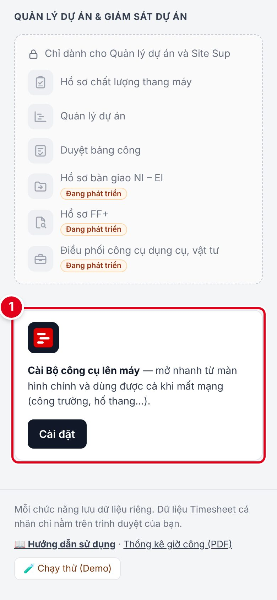
- Bấm Cài đặt để có biểu tượng trên màn hình chính, mở nhanh như một ứng dụng.
📱 Android (Chrome)
Bấm Cài đặt trên thẻ, hoặc menu ⋮ → Cài đặt ứng dụng / Thêm vào màn hình chính.
🍎 iPhone (Safari)
Bấm nút Chia sẻ (ô vuông có mũi tên lên) → Thêm vào MH chính → Thêm.
Mất sóng ở công trường vẫn chấm công được. Dữ liệu lưu ngay trên điện thoại, có mạng lại thì tự gửi lên máy chủ. Thanh trạng thái sẽ báo “Mất mạng — dữ liệu an toàn trên máy”.
1.4. Chạy thử (Demo) — tập dùng không sợ sai
Muốn thử bấm các nút mà không ảnh hưởng dữ liệu thật? Bấm 🧪 Chạy thử (Demo) ở chân trang chủ, chọn vai trò muốn thử.
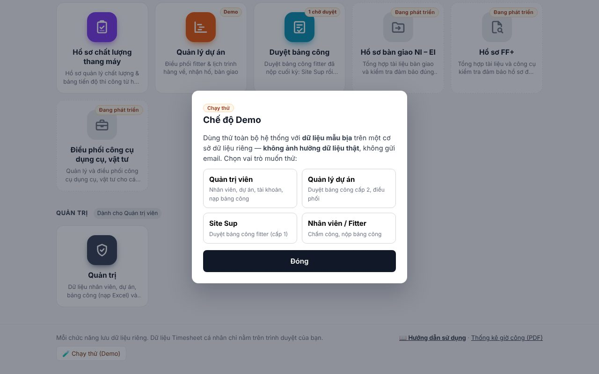
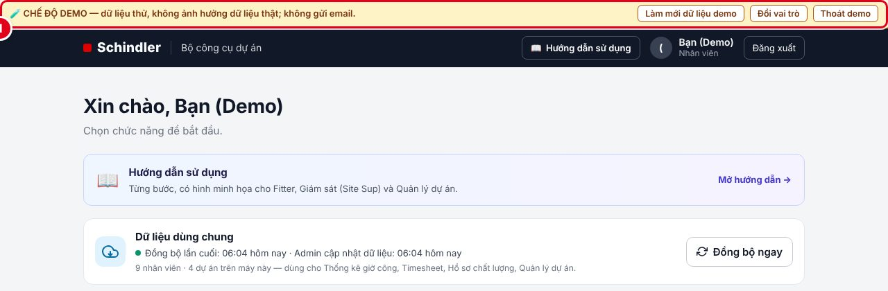
- Thanh vàng CHẾ ĐỘ DEMO: dữ liệu mẫu riêng, không ảnh hưởng dữ liệu thật, không gửi email. Có nút Làm mới dữ liệu demo, Đổi vai trò, Thoát demo.
Nhớ bấm Thoát demo khi thử xong — chấm công thật phải làm ngoài chế độ demo.
2. Fitter / Nhân viên — Timesheet cá nhân
Chấm công hằng ngày, ghi báo cáo thi công, nộp bảng công cuối kỳ.
Ghi nhớ 3 điều:
- Kỳ lương tính từ ngày 16 tháng trước đến ngày 15 tháng này (ví dụ kỳ 11/2026 = 16/10 → 15/11).
- Chấm công mỗi ngày (làm xong ca là chấm luôn, kèm vài dòng báo cáo thi công).
- Nộp bảng công trước ngày 12 của tháng kết thúc kỳ (kỳ 11/2026 → nộp trước 12/11). Các ngày 13–15 chấm trước theo kế hoạch rồi nộp.
2.1. Màn hình Timesheet
Từ trang chủ bấm thẻ Timesheet cá nhân.
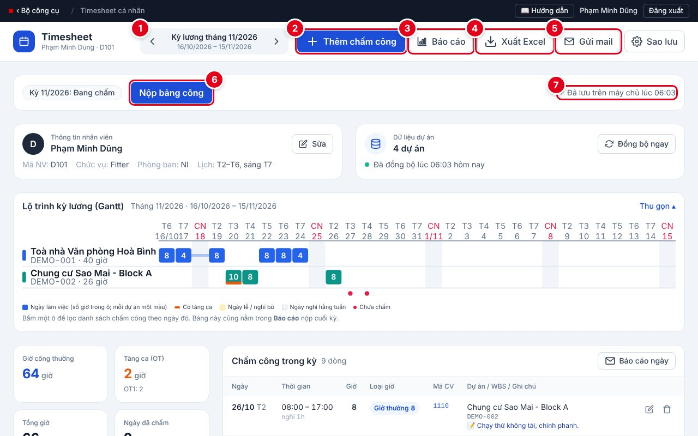
- Kỳ lương — bấm ‹ › để xem kỳ trước / kỳ sau.
- + Thêm chấm công — ghi một dòng chấm công mới (xem mục 2.2).
- Báo cáo — bản tổng hợp cả kỳ (giờ thường, tăng ca, theo dự án, biểu đồ) để xem hoặc in.
- Xuất Excel — tải file bảng công theo mẫu công ty.
- Gửi mail — gửi bảng công (kèm file Excel) cho giám sát qua ứng dụng email của bạn.
- Nộp bảng công — nộp cả kỳ để giám sát duyệt (mục 2.5).
- Trạng thái lưu — “✓ Đã lưu trên máy chủ” là dữ liệu đã an toàn; “Chưa gửi” / “Mất mạng” là đang chờ mạng để gửi.
Phía dưới có: Thông tin nhân viên (tự lấy theo tài khoản), Lộ trình kỳ lương (Gantt) cho thấy mỗi ngày làm dự án nào, bao nhiêu giờ, và các ô thống kê Giờ công thường / Tăng ca / Tổng giờ / Ngày đã chấm.
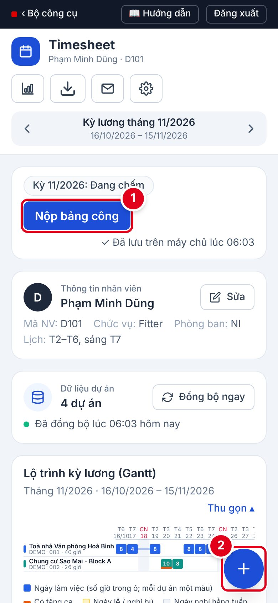
Trên điện thoại
- Nộp bảng công nằm ngay đầu trang.
- Nút tròn ＋ ở góc dưới luôn hiện khi cuộn — bấm để thêm chấm công.
Các nút Báo cáo, Xuất Excel, Gửi mail, Cài đặt là 4 biểu tượng nhỏ dưới tên bạn.
2.2. Thêm chấm công (mỗi ngày)


- Ngày — mặc định là hôm nay. Chấm bù ngày khác thì chọn lại ngày.
- Từ – Đến – Nghỉ — giờ vào, giờ ra và số giờ nghỉ (thường 1 giờ nghỉ trưa). Ô Số giờ tính công tự hiện ngay bên dưới.
- Tự tính giờ thường / OT theo Luật Lao động — để nguyên dấu tick. Hệ thống tự chia giờ thường, OT 150%, 200%, 300%, ban đêm, ngày lễ.
- Mã công việc — chọn đúng loại việc (ví dụ 1110 – NI Prod. Hours Fitter cho giờ lắp đặt).
- Tên dự án + Work Number / WBS — gõ vài chữ tên dự án rồi chọn trong gợi ý, WBS tự điền.
- Báo cáo thi công trong ngày — vài dòng hôm nay làm gì, vướng gì. Giám sát đọc được nội dung này.
- Lưu.
Một ngày làm 2 dự án? Thêm 2 dòng, mỗi dòng một khoảng giờ và một dự án.
Sửa / xoá: bấm biểu tượng ✏️ hoặc 🗑 ở cuối dòng trong danh sách. Xoá nhầm thì bấm Hoàn tác trên thông báo hiện ra.
2.3. Lịch kỳ lương & danh sách chấm công
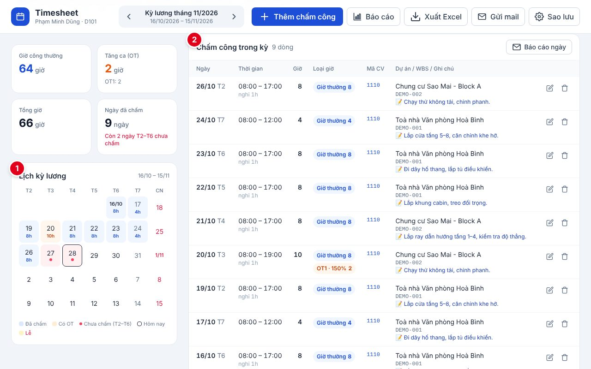
- Lịch kỳ lương — ngày có chấm đỏ là ngày làm việc chưa chấm công; ngày xanh là đã chấm (kèm số giờ). Bấm một ngày trên lịch để thêm / xem chấm công ngày đó.
- Chấm công trong kỳ — mọi dòng đã ghi: thời gian, số giờ, loại giờ (thường / OT), mã công việc, dự án và 📝 báo cáo thi công.
2.4. Báo cáo ngày & gửi mail cho giám sát
Không bắt buộc gửi mail mỗi ngày: hệ thống tự gửi email tổng hợp báo cáo thi công lúc 18:30 hằng ngày cho Site Sup / Quản lý dự án của dự án. Hai nút dưới đây dùng khi bạn muốn gửi thêm hoặc gửi gấp.
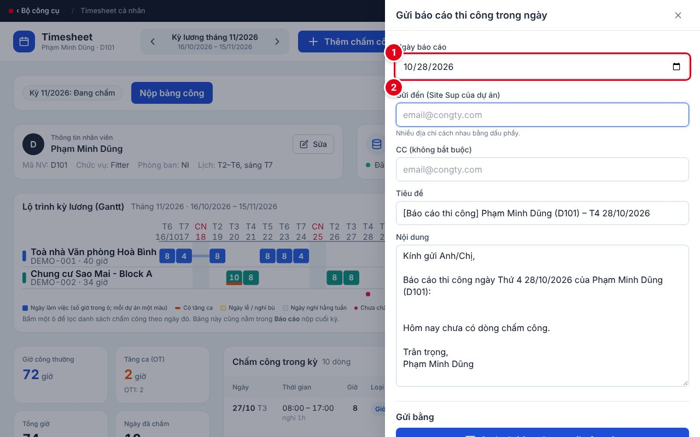
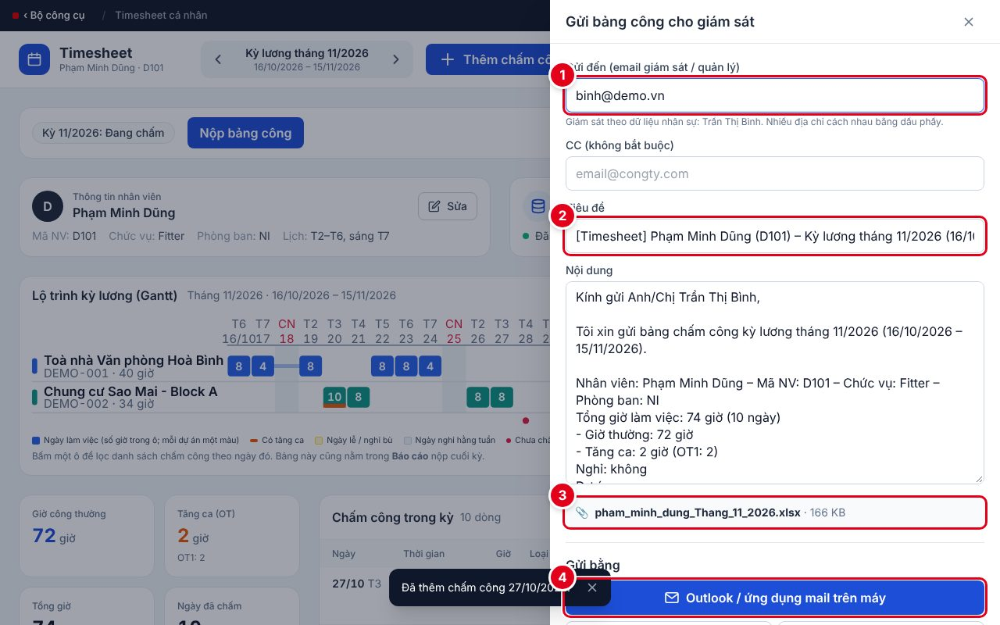
Báo cáo ngày (ảnh trái): ① chọn ngày báo cáo, ② nhập email giám sát (lần sau tự nhớ) — nội dung lấy từ các dòng chấm công và báo cáo thi công của ngày đó.
Gửi mail (ảnh phải):
- Gửi đến — tự điền email giám sát theo dữ liệu nhân sự (sửa được).
- Tiêu đề, Nội dung — soạn sẵn: tổng giờ, giờ thường, tăng ca.
- File đính kèm — file Excel bảng công được tạo sẵn.
- Chọn cách gửi: Outlook / ứng dụng mail trên máy, Gmail hoặc Outlook web. Trên điện thoại có thêm nút Chia sẻ (Zalo, Gmail…).
2.5. Nộp bảng công cuối kỳ
- Kiểm tra Lịch kỳ lương: không còn ngày chấm đỏ (ngày nghỉ phép thì chấm mã nghỉ tương ứng).
- Từ ngày 9 app hiện nhắc hạn ⏰; email nhắc vào sáng ngày 9 và ngày 11. Hạn cuối là ngày 12.
- Bấm Nộp bảng công → xác nhận.
- Trạng thái chuyển thành Đã nộp — chờ giám sát. Bảng công bị khoá (không thêm / sửa được) trong lúc chờ duyệt.

- Trạng thái kỳ — theo dõi bảng công đang ở bước nào.
- Thu hồi để sửa — nộp nhầm? Bấm để lấy về sửa tiếp (chỉ được khi giám sát chưa duyệt), sửa xong nộp lại.
Các trạng thái bảng công
Ở bất kỳ bước duyệt nào, nếu có sai sót giám sát / quản lý có thể Bị trả lại — cần sửa kèm lý do.
2.6. Khi bảng công bị trả lại
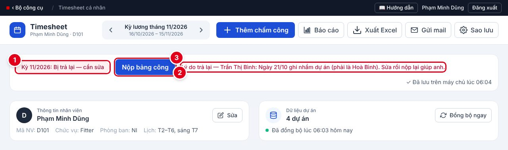
- Trạng thái đổi thành Bị trả lại — cần sửa; bạn cũng nhận email thông báo.
- Lý do của người duyệt hiện ngay bên cạnh — đọc kỹ để sửa đúng chỗ.
- Sửa các dòng cần sửa, rồi bấm Nộp bảng công lại.
3. Giám sát (Site Sup)
Duyệt bảng công cấp 1, lập hồ sơ chất lượng, theo dõi lịch trình dự án. Site Sup cũng chấm công cá nhân như Fitter (mục 2).
3.1. Trang chủ của giám sát
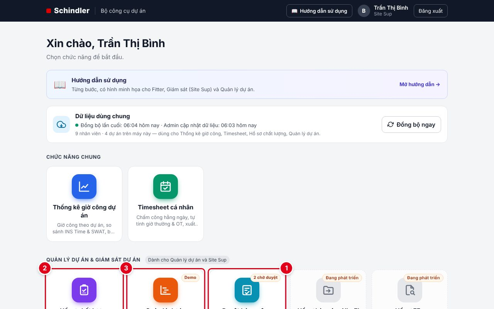
- Duyệt bảng công — nhãn đỏ “N chờ duyệt” cho biết số bảng công đang chờ bạn.
- Hồ sơ chất lượng thang máy — lập trọn bộ hồ sơ nghiệm thu, biên bản, nhật ký (mục 3.4).
- Quản lý dự án — xem lịch trình các dự án, điều phối fitter (mục 3.3 và phần 4).
3.2. Duyệt bảng công (cấp 1)
Bạn chỉ thấy bảng công của fitter làm ở dự án bạn phụ trách. Nên duyệt sớm sau khi fitter nộp để Quản lý dự án kịp duyệt.
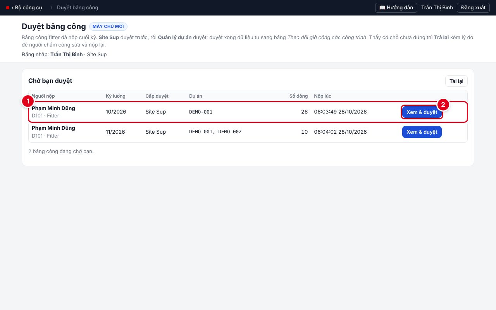
- Mỗi dòng: người nộp, kỳ lương, cấp duyệt (Site Sup / Quản lý dự án), dự án, số dòng, thời điểm nộp.
- Xem & duyệt — mở chi tiết.
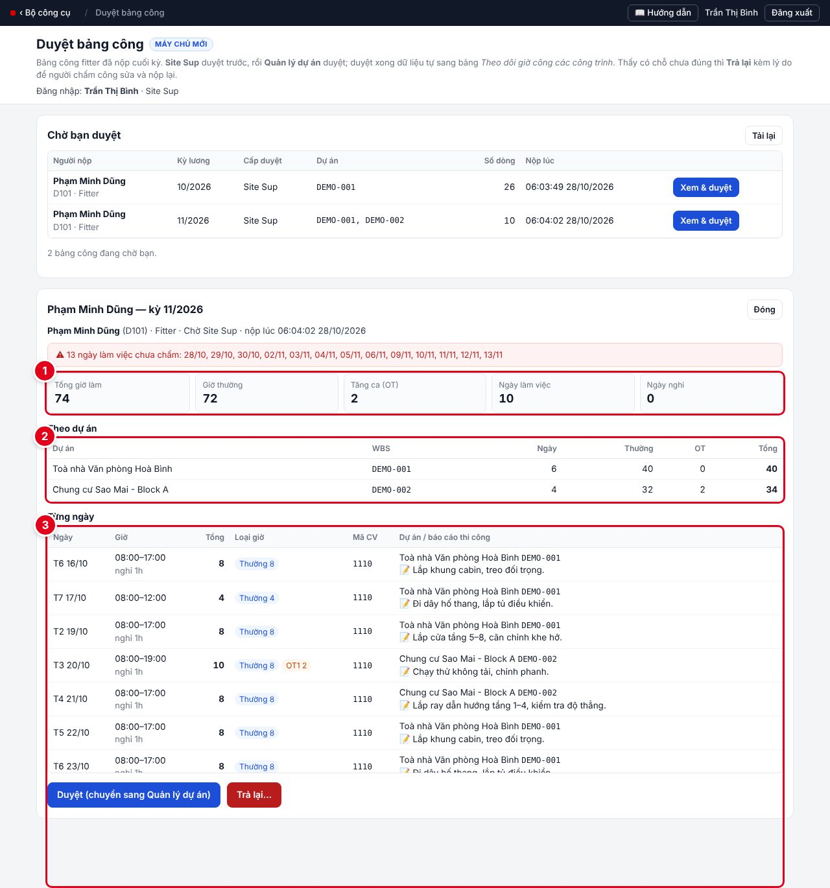
- Tổng quan: giờ công, giờ thường, tăng ca, số ngày; dòng cảnh báo vàng liệt kê ngày làm việc chưa chấm.
- Theo dự án: số ngày, giờ thường, OT của từng dự án — so với thực tế công trường.
- Từng ngày: giờ vào – ra, loại giờ, mã công việc, dự án và báo cáo thi công. Dòng tô đỏ là dòng có phân loại giờ không khớp quy định → nên trả lại để fitter mở lại Timesheet và nộp lại.

- Duyệt (chuyển sang Quản lý dự án) — đúng thì bấm duyệt; bảng công chuyển lên Quản lý dự án.
- Thấy sai: bấm Trả lại…, ghi lý do cụ thể (ngày nào, sai gì) — bắt buộc, fitter sẽ đọc lý do này.
- Trả lại bảng công để gửi.
Hằng tối 18:30 bạn nhận email tổng hợp báo cáo thi công trong ngày của fitter ở dự án mình. Sáng ngày 11 có email nhắc nếu còn bảng công chờ bạn duyệt.
3.3. Xem lại lịch trình dự án
Mở Quản lý dự án → tab Lịch trình dự án → Lịch trình (Gantt), bấm Dự án của tôi để chỉ xem dự án mình giám sát.
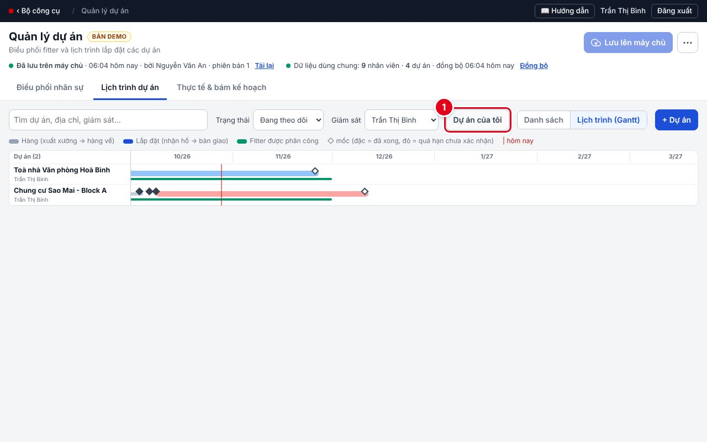
- Dự án của tôi — lọc nhanh theo tên giám sát của bạn.
| Ký hiệu trên Gantt | Ý nghĩa |
|---|---|
| Hàng: từ xuất xưởng đến hàng về | |
| Lắp đặt: từ nhận hố đến bàn giao (màu của dự án) | |
| Thời gian có fitter được phân công | |
| ◇ / ◆ / ◇ đỏ | Mốc chưa xong / đã xong / quá hạn chưa xác nhận |
| │ | Hôm nay |
Bấm tên dự án để mở chi tiết: ngày hàng về, giao hố, nhận hố, bàn giao, ghi chú. Chi tiết các thao tác xem mục 4.3.
3.4. Hồ sơ chất lượng thang máy
Lập trọn bộ hồ sơ nghiệm thu (.docx, mở bằng Word để in), biên bản hàng về, biên bản bàn giao thang và nhật ký thi công — chỉ cần nhập thông tin một lần.
Bước 1 — Nhập hợp đồng
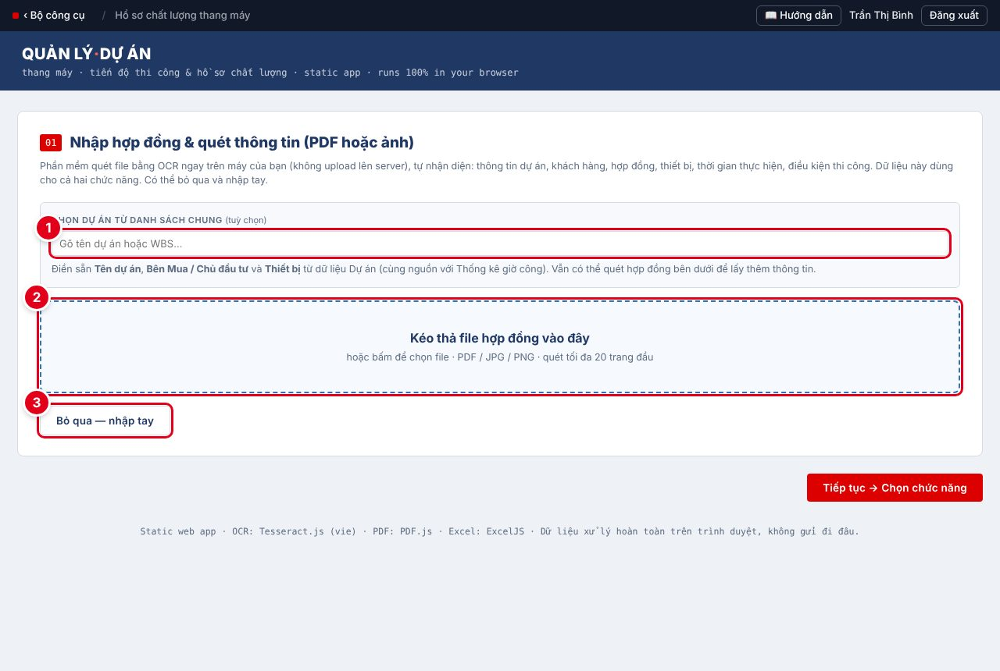
- Chọn dự án từ danh sách chung — gõ tên / WBS để điền sẵn tên dự án, chủ đầu tư, thiết bị.
- Kéo thả file hợp đồng (PDF / ảnh) — app tự quét để lấy số hợp đồng, ngày ký, các bên… (xử lý ngay trên máy, không gửi file đi đâu).
- Hoặc Bỏ qua — nhập tay.
Bước 2 — Chọn chức năng
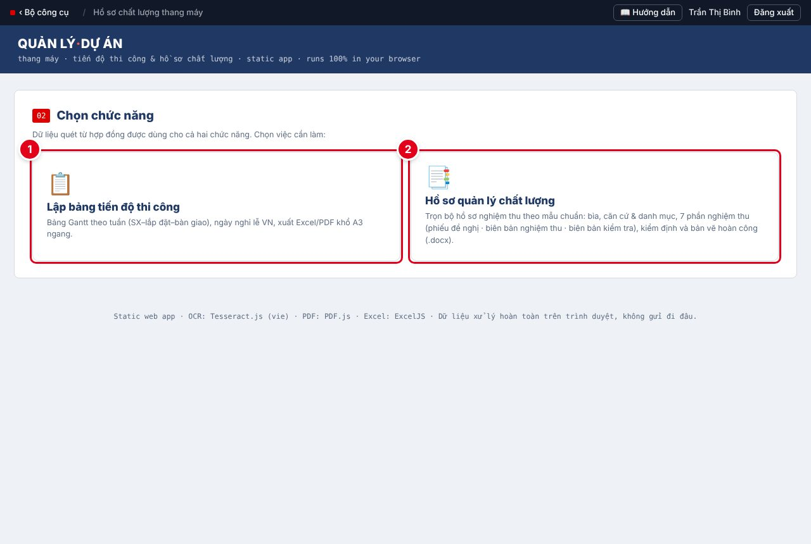
- Lập bảng tiến độ thi công — Gantt theo tuần, xuất Excel / PDF khổ A3 (xem mục 4.5).
- Hồ sơ quản lý chất lượng — bộ hồ sơ nghiệm thu Word.
Bước 3 — Điền thông tin hồ sơ
Điền lần lượt các mục A → F. Ô để trống sẽ in dấu chấm để điền tay sau.
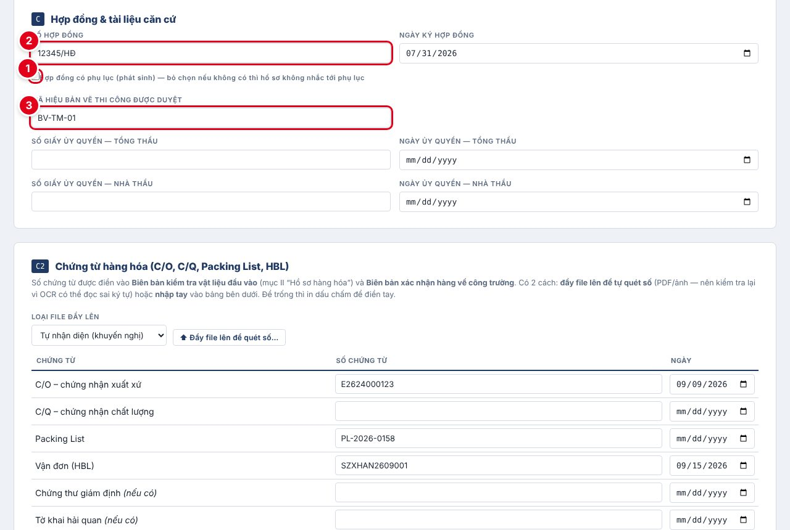
- Hợp đồng có phụ lục — chỉ tick khi thật sự có phụ lục; không tick thì toàn bộ hồ sơ không nhắc tới phụ lục.
- Số và ngày ký hợp đồng.
- Mã hiệu bản vẽ thi công được duyệt.
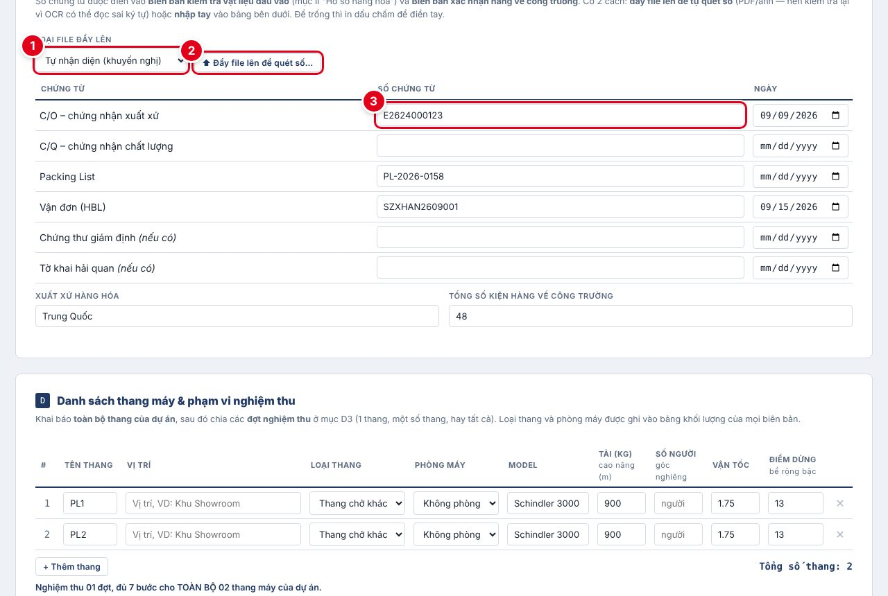
- Loại file — để “Tự nhận diện” hoặc chọn đúng loại nếu đẩy từng loại.
- ⬆ Đẩy file lên để quét số… — chọn một hay nhiều file PDF / ảnh; app tự đọc số và ngày chứng từ, xuất xứ, số kiện.
- Kết quả điền vào bảng — luôn đối chiếu với bản gốc (máy có thể đọc nhầm ký tự). Có thể gõ tay trực tiếp.
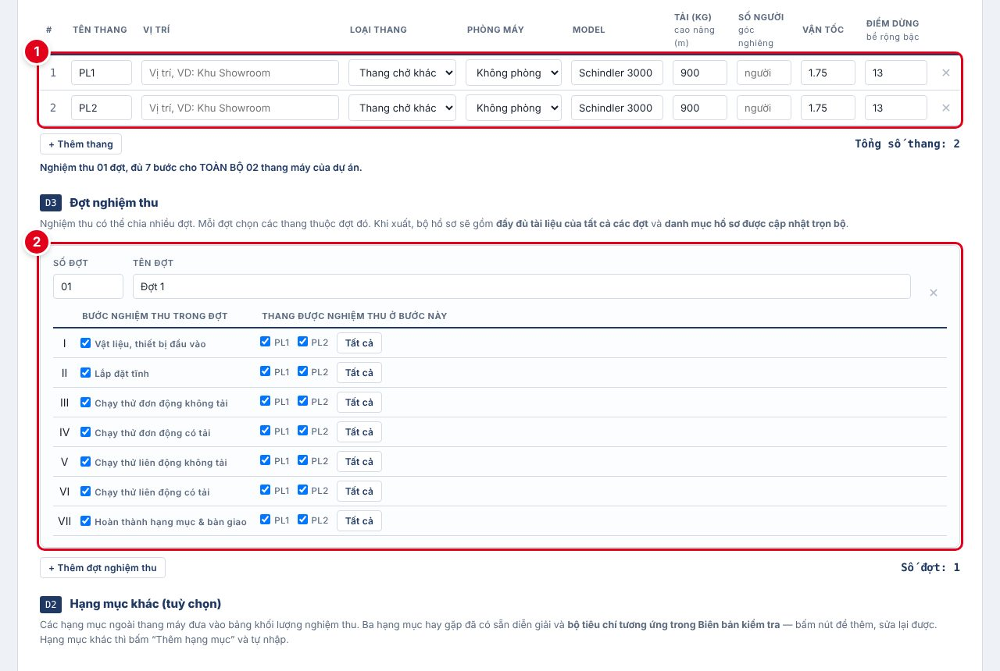
- Khai báo toàn bộ thang của dự án: tên, loại, model, tải, tốc độ, số điểm dừng…
- Đợt nghiệm thu: mỗi đợt chọn các bước (vật liệu đầu vào, lắp đặt tĩnh, chạy thử…, hoàn thành) và thang thuộc bước đó.
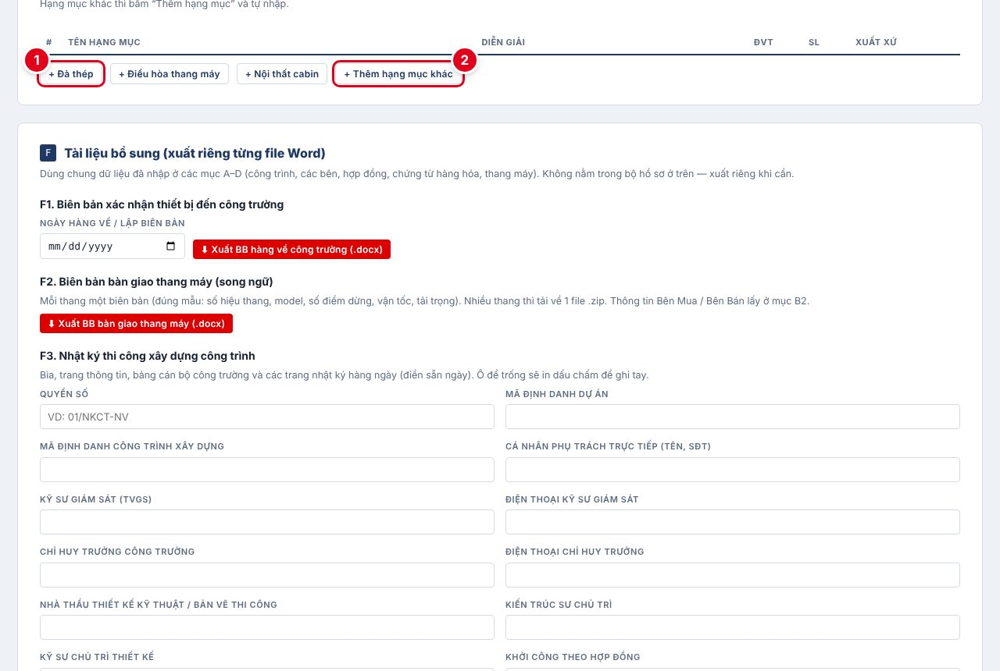
- + Đà thép, + Điều hòa…, + Nội thất cabin — thêm hạng mục có sẵn diễn giải. Chỉ khi có hạng mục thì đà thép / phát sinh mới vào biên bản lắp đặt tĩnh và các biên bản kiểm tra.
- + Thêm hạng mục khác — tự đặt tên, đơn vị, số lượng.
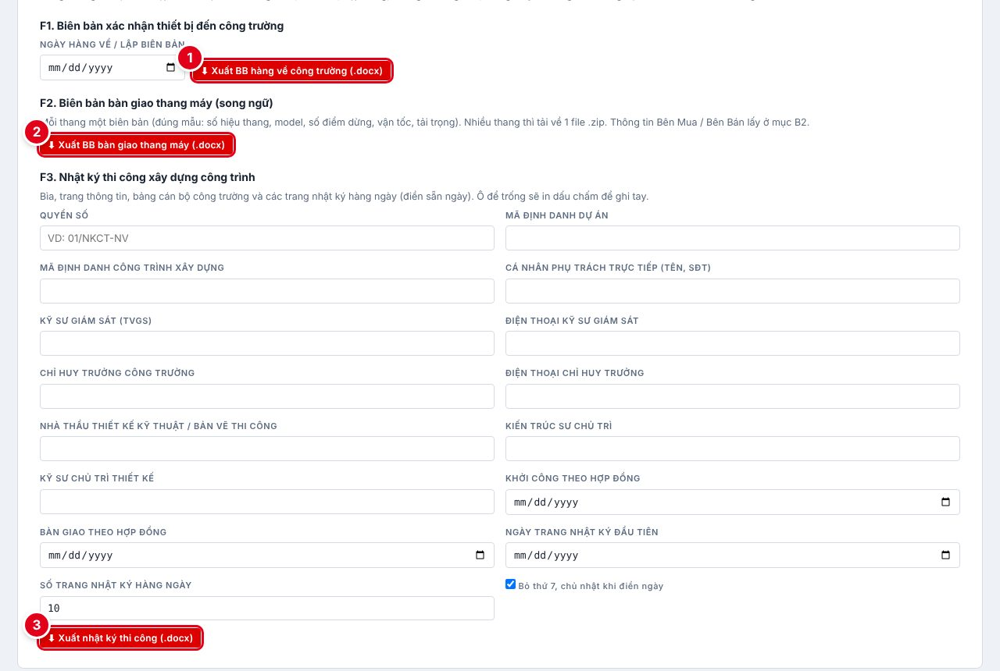
- Biên bản xác nhận thiết bị đến công trường — lấy số HBL, Packing List, C/O, C/Q, số kiện ở mục C2.
- Biên bản bàn giao thang máy (song ngữ) — mỗi thang một file; nhiều thang tải về file .zip.
- Nhật ký thi công — bìa, trang thông tin, bảng cán bộ và số trang nhật ký hằng ngày (điền sẵn ngày).
Bước 4 — Xuất bộ hồ sơ
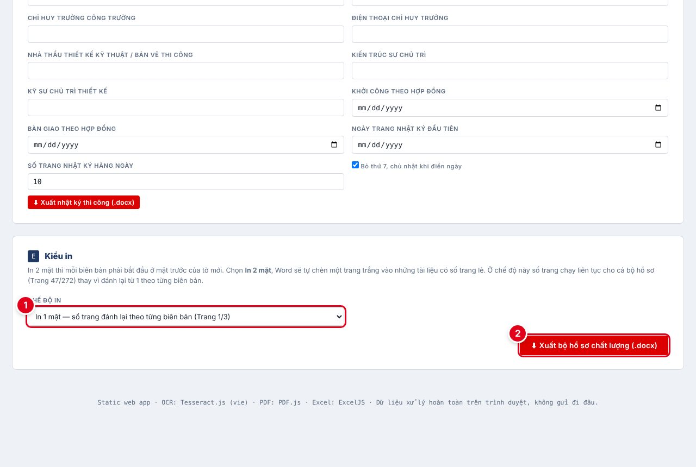
- Chế độ in: 1 mặt (đánh số trang theo từng biên bản) hoặc 2 mặt (tự chèn trang trắng).
- ⬇ Xuất bộ hồ sơ chất lượng (.docx) → mở bằng Word, kiểm tra rồi in.
Dữ liệu hồ sơ nằm trên trình duyệt của bạn. Lần sau mở lại vẫn còn; đổi máy thì phải nhập lại (hoặc chọn dự án từ danh sách chung để điền nhanh).
3.5. Thống kê giờ công dự án
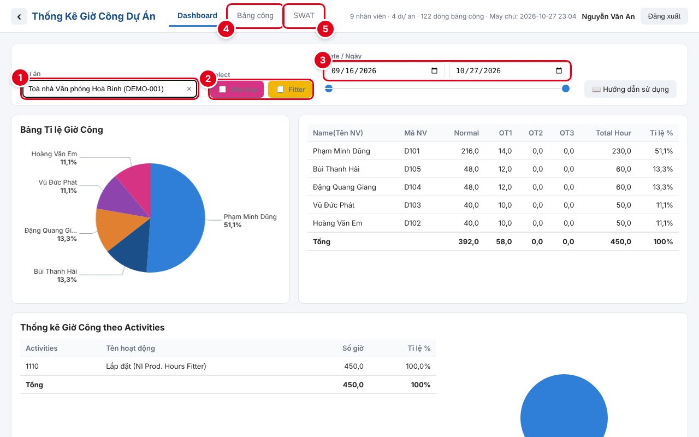
- Dự án — gõ tên hoặc WBS để chọn.
- Lọc theo Site Sup / Fitter.
- Khoảng ngày — chọn từ ngày – đến ngày hoặc kéo thanh trượt.
- Tab Bảng công — xem từng dòng giờ công (gồm cả Excel nạp hằng tháng và bảng công đã duyệt).
- Tab SWAT — tính SWAT Hour, so sánh với giờ thực tế, xuất báo cáo.
Hướng dẫn chi tiết các biểu đồ, báo cáo PDF / Excel: Hướng dẫn Thống kê giờ công (PDF).
4. Quản lý dự án
Duyệt bảng công cấp 2, điều phối nhân sự, theo dõi lịch trình, đánh giá bám kế hoạch. Các thao tác của giám sát (mục 3) bạn cũng làm được.
4.1. Duyệt bảng công cấp 2
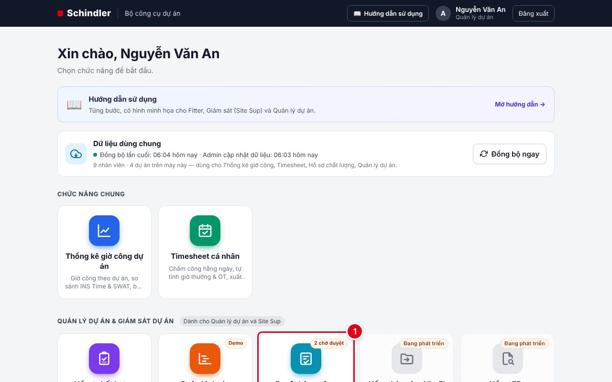
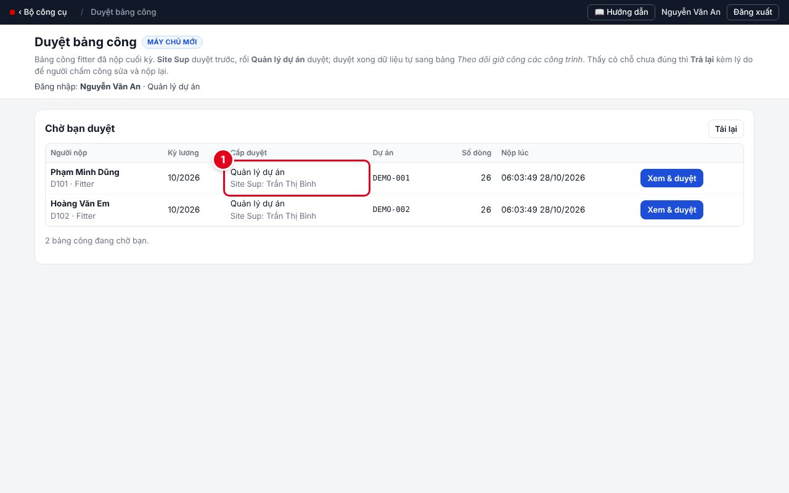
- Cột Cấp duyệt ghi “Quản lý dự án” và tên Site Sup đã duyệt trước.
Mở chi tiết và duyệt / trả lại giống mục 3.2. Khi bạn bấm Duyệt, bảng công chuyển trạng thái Đã duyệt xong và giờ công tự đẩy sang bảng Theo dõi giờ công (Thống kê giờ công) — không cần nhập lại.
4.2. Điều phối nhân sự (fitter × ngày)
Mở Quản lý dự án → tab Điều phối nhân sự. Dữ liệu lưu chung trên máy chủ: mọi Quản lý dự án / Site Sup cùng xem, tự lưu sau mỗi thay đổi.
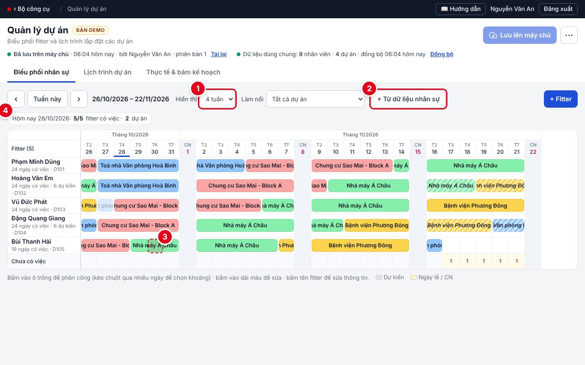
- Hiển thị 2 / 4 / 6 / 8 tuần; nút ‹ Tuần này › để di chuyển.
- + Từ dữ liệu nhân sự — thêm fitter từ EE Data (có mã NV, cần cho mục 4.4).
- Kéo thả (máy tính): giữ chuột trên một dải màu rồi kéo sang fitter / ngày khác — khung nét đứt cho thấy chỗ sẽ thả (đỏ = đè lên lịch đã có). Kéo mép trái / phải của dải để rút ngắn / kéo dài.
- Hôm nay: số fitter có việc và tên người đang rảnh.
- Phân công mới: bấm ô trống (hoặc kéo chuột qua nhiều ô trống) → chọn dự án, từ – đến ngày, Chính thức hay Dự kiến (dải sọc) → Lưu.
- Sửa: bấm (không kéo) vào dải màu → đổi dự án / ngày / fitter, hoặc Bỏ trống.
- Mọi thay đổi có Hoàn tác trên thông báo hiện ra.
Nền vàng = ngày lễ, xám = Chủ nhật. Dòng cuối Chưa có việc đếm số fitter rảnh mỗi ngày làm việc.
4.3. Lịch trình dự án
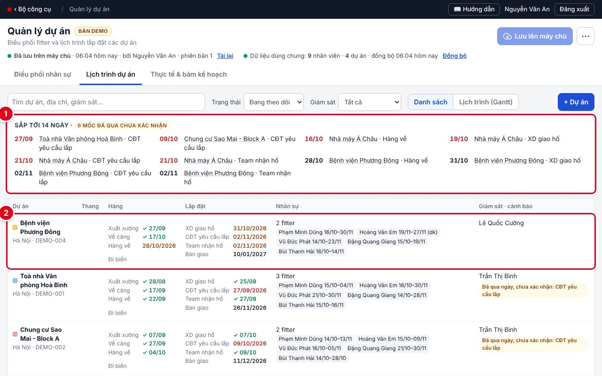
- Sắp tới 14 ngày — các mốc sắp đến và mốc đã qua chưa xác nhận (đỏ).
- Mỗi dự án: thông số thang, mốc hàng (xuất xưởng, về cảng, hàng về), mốc lắp đặt (giao hố, CĐT yêu cầu, nhận hố, bàn giao), fitter đang phân công, giám sát và cảnh báo.
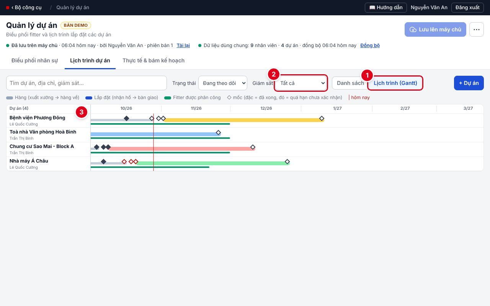
- Danh sách / Lịch trình (Gantt) — chuyển cách xem.
- Lọc theo Giám sát, trạng thái, tìm theo tên.
- Mỗi dòng một dự án: dải hàng, dải lắp đặt, gạch xanh fitter, các mốc ◇ (ký hiệu xem bảng ở mục 3.3).
Tự điền thông số thang: khi dự án có WBS trùng với dự án chung, loại thang, số điểm dừng, tải trọng, hành trình, số lượng, giám sát được tự điền vào ô còn trống. Thêm dự án mới mà gõ tên giống dự án chung, app gợi ý “Có phải dự án … ?” — bấm để liên kết.
4.4. Thực tế & bám kế hoạch
So kế hoạch điều phối với chấm công thực tế (bảng Theo dõi giờ công) để biết fitter có làm đúng dự án như kế hoạch không và đánh giá chất lượng lên kế hoạch của giám sát.
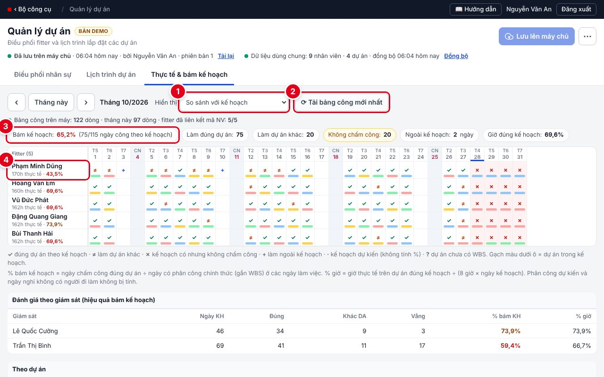
- Hiển thị: So sánh với kế hoạch hoặc Gantt thực tế.
- ⟳ Tải bảng công mới nhất — lấy dữ liệu chấm công mới nhất từ máy chủ.
- % bám kế hoạch = số ngày làm đúng dự án ÷ số ngày có phân công chính thức. Xanh ≥ 90%, vàng 70–90%, đỏ < 70%.
- Mỗi fitter: giờ thực tế và % bám kế hoạch. Trong ô ngày: ✓ đúng dự án · ≠ làm dự án khác · ✗ có kế hoạch nhưng không chấm công · + làm ngoài kế hoạch. Gạch màu dưới ô = dự án theo kế hoạch.
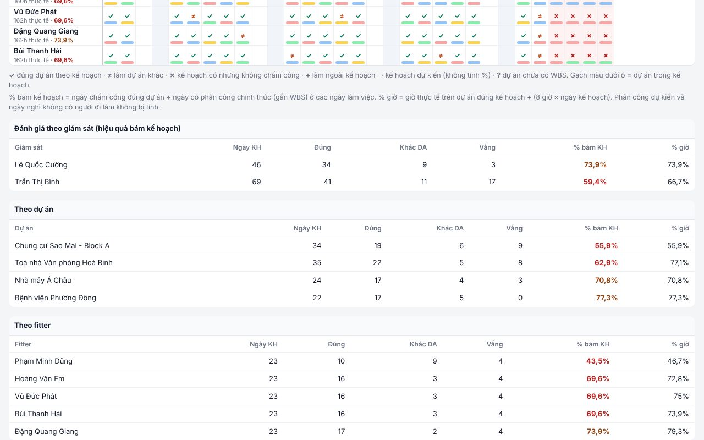
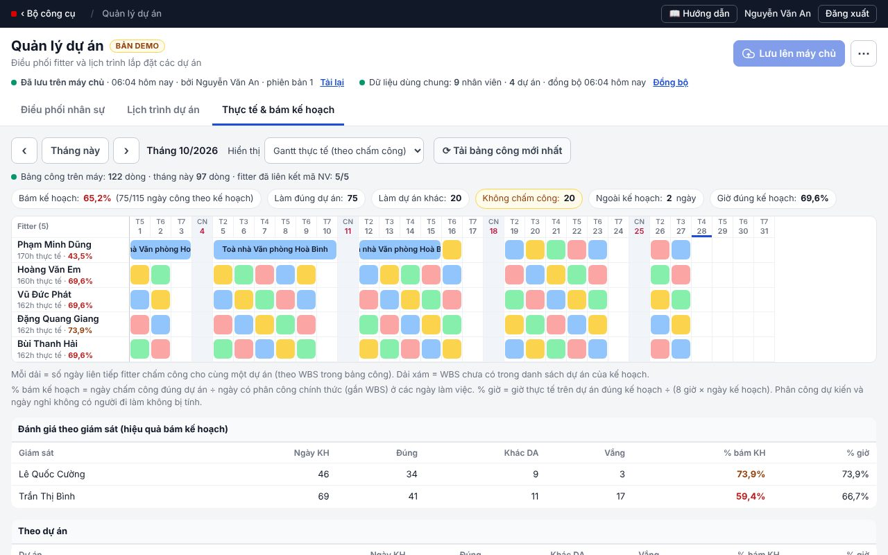
Muốn đối chiếu được: fitter trong lưới phải liên kết mã NV (thêm bằng “+ Từ dữ liệu nhân sự” hoặc bấm tên fitter để liên kết) và dự án phải có WBS. Phân công dự kiến và ngày nghỉ không có người đi làm không bị tính.
4.5. Bảng tiến độ thi công
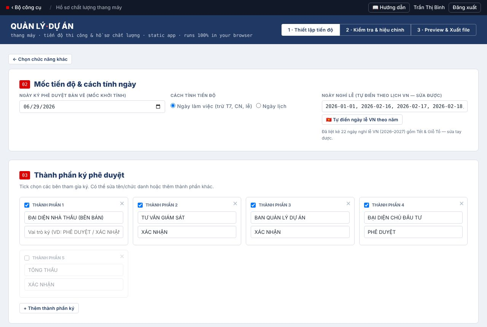
Nhập mốc ngày bắt đầu, chọn cách tính ngày (ngày làm việc / lịch), sửa danh sách bước và số ngày, các thành phần ký duyệt → xuất Excel hoặc PDF khổ A3 ngang. Ngày lễ Việt Nam được tự trừ. Từ bảng tiến độ có thể soạn thư xác nhận hàng về và nội dung email gửi khách hàng.
5. Quản trị viên
Chỉ tài khoản quản trị mới thấy thẻ “Quản trị”.
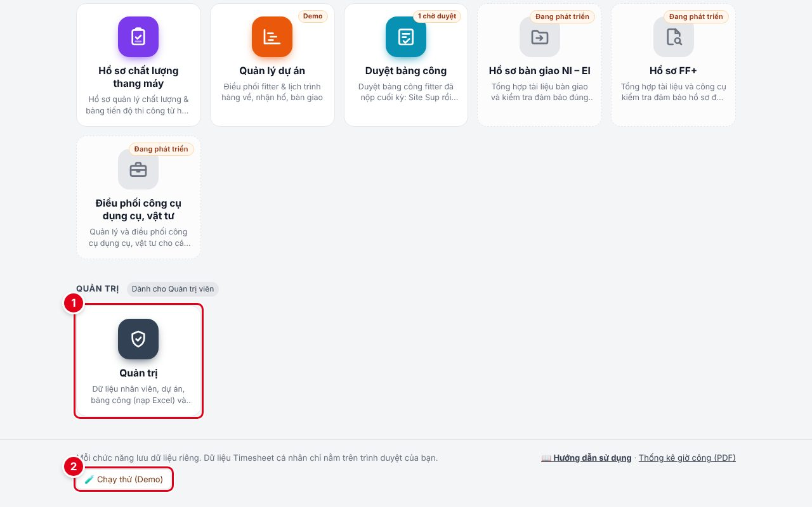
- Thẻ Quản trị — dữ liệu nhân viên, dự án, bảng công, tài khoản.
- Chạy thử (Demo) — dùng để hướng dẫn người mới mà không đụng dữ liệu thật.
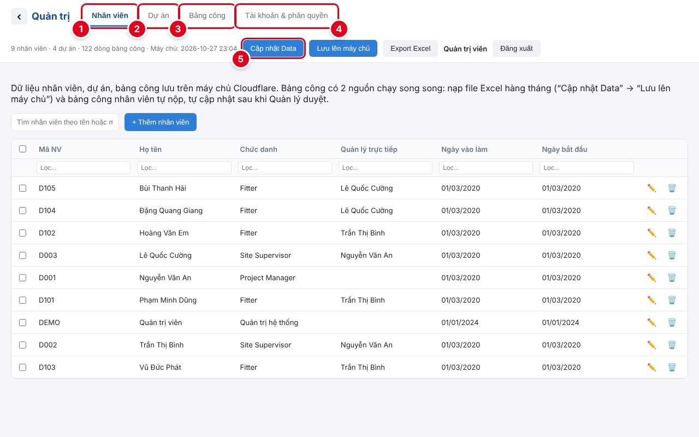
- Nhân viên — EE Data: thêm, sửa, xoá nhân viên; chức danh quyết định vai trò.
- Dự án — danh sách dự án, WBS, thông số thang, Swat Target Hour.
- Bảng công — bảng Theo dõi giờ công: tìm, lọc, tìm dòng trùng lặp, sửa / xoá.
- Tài khoản & phân quyền — gắn email đăng nhập, chỉnh vai trò, khoá tài khoản, phân công Site Sup / Quản lý dự án cho dự án, nhật ký thay đổi, gửi email thử.
- Cập nhật Data — nạp bảng công Excel hằng tháng.
5.1. Nạp bảng công Excel hằng tháng
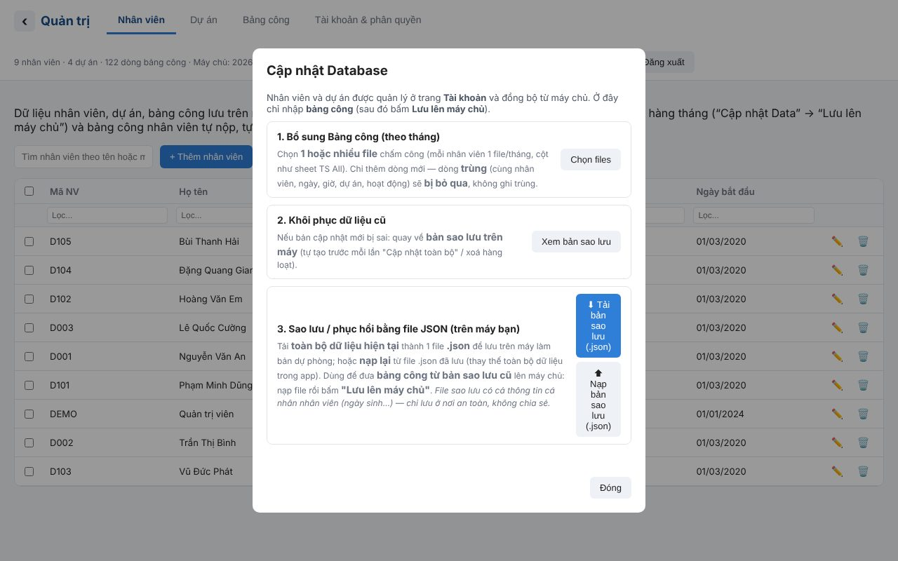
- Bấm Cập nhật Data → mục 1. Bổ sung Bảng công → Chọn files (mỗi nhân viên 1 file / tháng, cột như sheet TS All). Dòng trùng tự bỏ qua.
- Kiểm tra số dòng ở thanh trạng thái, rồi bấm Lưu lên máy chủ.
Hai nguồn bảng công chạy song song: (1) file Excel quản trị nạp hằng tháng; (2) bảng công nhân viên tự chấm, tự chuyển sang khi Quản lý dự án duyệt. Nạp lại Excel không làm mất các dòng đã duyệt (trừ ngày mà file Excel đã có dòng của người đó).
5.2. Tài khoản & phân quyền
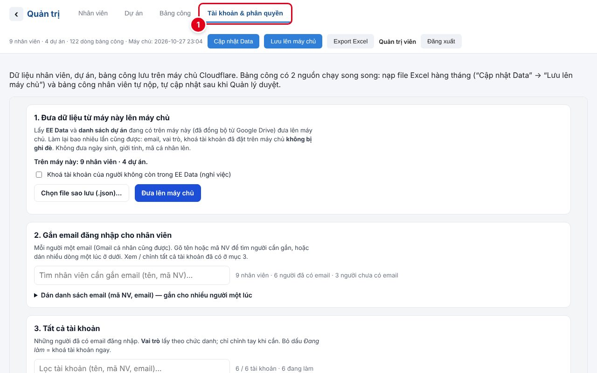
- Gắn email cho từng nhân viên (gõ tên / mã NV để tìm), hoặc dán danh sách mã NV + email từ Excel.
- Vai trò: mặc định theo chức danh; có thể chỉnh tay (Admin / Quản lý dự án / Site Sup / Nhân viên).
- Phân công dự án: chọn Site Sup và Quản lý dự án cho từng dự án — quyết định ai duyệt bảng công của dự án đó.
- Người nghỉ việc: khoá tài khoản (không xoá) để giữ lịch sử.
6. Hỏi đáp & xử lý sự cố
Mất sóng ở công trường có chấm công được không?
Được. Dữ liệu lưu ngay trên điện thoại; thanh trạng thái báo “Mất mạng — dữ liệu an toàn trên máy”. Có mạng lại app tự gửi lên máy chủ — không cần làm gì.
Đổi điện thoại / dùng thêm máy tính thì sao?
Đăng nhập bằng cùng email trên máy mới, mở Timesheet: bảng công tự tải về từ máy chủ. Chấm trên máy nào cũng được, các máy tự đồng bộ.
Không thấy dự án của mình khi chấm công?
Ở trang chủ bấm Đồng bộ ngay, hoặc trong Timesheet bấm Đồng bộ ngay ở thẻ “Dữ liệu dự án”. Vẫn không có → báo quản trị viên thêm dự án. Tạm thời vẫn gõ tay tên dự án / WBS được.
Nộp nhầm bảng công?
Nếu giám sát chưa duyệt: bấm Thu hồi để sửa, sửa xong nộp lại. Nếu đã duyệt: nhờ giám sát / quản lý trả lại bảng công.
Quá hạn ngày 12 chưa nộp?
Vẫn nộp được — app hiện cảnh báo đỏ. Nộp ngay và báo giám sát để kịp duyệt tính lương.
Không thấy chức năng Duyệt bảng công / Quản lý dự án?
Các chức năng này theo vai trò (từ chức danh). Nếu chức danh của bạn đã thay đổi, báo quản trị viên cập nhật; đăng xuất rồi đăng nhập lại.
Không nhận được mã đăng nhập?
Xem thư mục Spam / Quảng cáo; kiểm tra gõ đúng email; đợi 1 phút rồi bấm gửi lại. Vẫn không được → báo quản trị viên.
Site Sup / Quản lý không nhận được bảng công tôi nộp?
Người duyệt được xác định theo dự án (WBS) trên các dòng chấm công. Kiểm tra dòng chấm công đã ghi đúng dự án và WBS; báo quản trị viên kiểm tra phân công Site Sup / Quản lý dự án cho dự án đó.
Chế độ Demo có làm mất dữ liệu thật không?
Không. Demo dùng cơ sở dữ liệu riêng và tách riêng dữ liệu trên trình duyệt. Bấm Thoát demo là về đúng tài khoản và dữ liệu thật.
Muốn in tài liệu hướng dẫn này?
Bấm 🖨 In / Lưu PDF ở góc trên, chọn máy in hoặc “Lưu dưới dạng PDF”. Mỗi phần in bắt đầu từ trang mới.